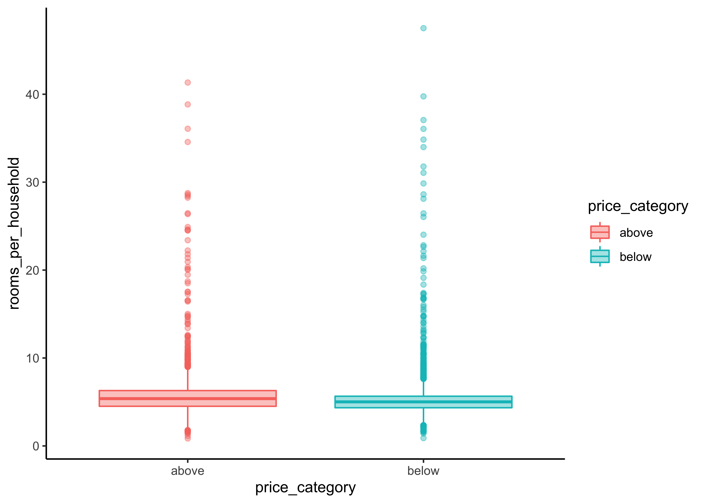
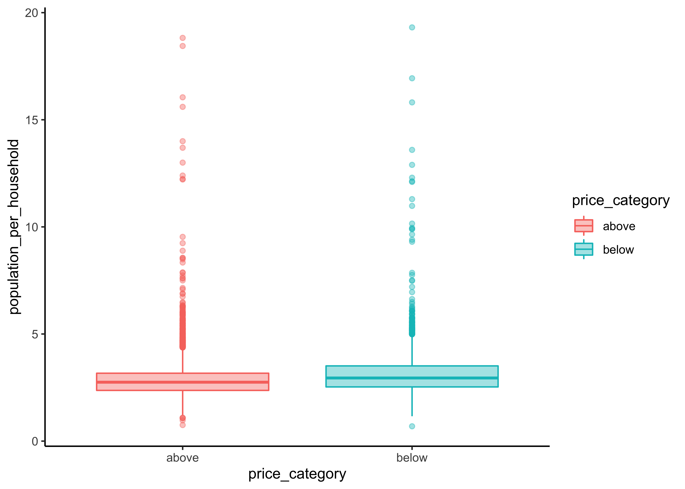

9 Data understanding
In Data Understanding, you:
- Import data
- Clean data
- Format data properly
- Create new variables
- Get an overview about the complete data
- Split data into training and test set using stratified sampling
- Discover and visualize the data to gain insights
9.2 Clean data
To get a first impression of the data we take a look at the top 4 rows:
| longitude | latitude | housing_median_age | total_rooms | total_bedrooms | population | households | median_income | median_house_value | ocean_proximity |
|---|---|---|---|---|---|---|---|---|---|
| -122 | 38 | 41.0years | 880 | 129 | 322 | 126 | 8.3 | 452600.0$ | NEAR BAY |
| -122 | 38 | 21.0 | 7099 | 1106 | 2401 | 1138 | 8.3 | 358500.0 | NEAR BAY |
| -122 | 38 | 52.0 | 1467 | 190 | 496 | 177 | 7.3 | 352100.0 | NEAR BAY |
| -122 | 38 | 52.0 | 1274 | 235 | 558 | 219 | 5.6 | 341300.0 | NEAR BAY |
Notice the values in the first row of the variables housing_median_ageand median_house_value. We need to remove the strings “years” and “$.” Therefore, we use the function str_remove_all from the stringr package. Since there could be multiple wrong entries of the same type, we apply our corrections to all of the rows of the corresponding variable:
library(stringr)
housing_df <-
housing_df %>%
mutate(
housing_median_age = str_remove_all(housing_median_age, "[years]"),
median_house_value = str_remove_all(median_house_value, "[$]")
)We don’t cover the phase of data cleaning in detail in this tutorial. However, in a real data science project, data cleaning is usually a very time consuming process.
9.3 Format data
Next, we take a look at the data structure and check wether all data formats are correct:
Numeric variables should be formatted as integers (
int) or double precision floating point numbers (dbl).Categorical (nominal and ordinal) variables should usually be formatted as factors (
fct) and not characters (chr). Especially, if they don’t have many levels.
glimpse(housing_df)
#> Rows: 20,640
#> Columns: 10
#> $ longitude <dbl> -122, -122, -122, -122, -122, -122, -122, -122, -1…
#> $ latitude <dbl> 38, 38, 38, 38, 38, 38, 38, 38, 38, 38, 38, 38, 38…
#> $ housing_median_age <chr> "41.0", "21.0", "52.0", "52.0", "52.0", "52.0", "5…
#> $ total_rooms <dbl> 880, 7099, 1467, 1274, 1627, 919, 2535, 3104, 2555…
#> $ total_bedrooms <dbl> 129, 1106, 190, 235, 280, 213, 489, 687, 665, 707,…
#> $ population <dbl> 322, 2401, 496, 558, 565, 413, 1094, 1157, 1206, 1…
#> $ households <dbl> 126, 1138, 177, 219, 259, 193, 514, 647, 595, 714,…
#> $ median_income <dbl> 8.3, 8.3, 7.3, 5.6, 3.8, 4.0, 3.7, 3.1, 2.1, 3.7, …
#> $ median_house_value <chr> "452600.0", "358500.0", "352100.0", "341300.0", "3…
#> $ ocean_proximity <chr> "NEAR BAY", "NEAR BAY", "NEAR BAY", "NEAR BAY", "N…The package visdat helps us to explore the data class structure visually:

We can observe that the numeric variables housing_media_age and median_house_value are declared as characters (chr) instead of numeric. We choose to format the variables as dbl, since the values could be floating-point numbers.
Furthermore, the categorical variable ocean_proximity is formatted as character instead of factor. Let’s take a look at the levels of the variable:
housing_df %>%
count(ocean_proximity,
sort = TRUE)
#> # A tibble: 5 x 2
#> ocean_proximity n
#> <chr> <int>
#> 1 <1H OCEAN 9136
#> 2 INLAND 6551
#> 3 NEAR OCEAN 2658
#> 4 NEAR BAY 2290
#> 5 ISLAND 5The variable has only 5 levels and therefore should be formatted as a factor.
Note that it is usually a good idea to first take care of the numerical variables. Afterwards, we can easily convert all remaining character variables to factors using the function across from the dplyr package (which is part of the tidyverse).
# convert to numeric
housing_df <-
housing_df %>%
mutate(
housing_median_age = as.numeric(housing_median_age),
median_house_value = as.numeric(median_house_value)
)
# convert all remaining character variables to factors
housing_df <-
housing_df %>%
mutate(across(where(is.character), as.factor))9.4 Missing data
Now let’s turn our attention to missing data. Missing data can be viewed with the function vis_miss from the package visdat. We arrange the data by columns with most missingness:
vis_miss(housing_df, sort_miss = TRUE)Here an alternative method to obtain missing data:
is.na(housing_df) %>% colSums()
#> longitude latitude housing_median_age total_rooms
#> 0 0 0 0
#> total_bedrooms population households median_income
#> 207 0 0 0
#> median_house_value ocean_proximity
#> 0 0We have a missing rate of 0.1% (207 cases) in our variable total_bedroms. This can cause problems for some algorithms. We will take care of this issue during our data preparation phase.
9.5 Create new variables
One very important thing you may want to do at the beginning of your data science project is to create new variable combinations. For example:
the total number of rooms in a district is not very useful if you don’t know how many households there are. What you really want is the number of rooms per household.
Similarly, the total number of bedrooms by itself is not very useful: you probably want to compare it to the number of rooms.
And the population per household also seems like an interesting attribute combination to look at.
Let’s create these new attributes:
housing_df <-
housing_df %>%
mutate(rooms_per_household = total_rooms/households,
bedrooms_per_room = total_bedrooms/total_rooms,
population_per_household = population/households)Furthermore, in our example we need to create our dependent variable and drop the original numeric variable:
housing_df <-
housing_df %>%
mutate(price_category = case_when(
median_house_value < 150000 ~ "below",
median_house_value >= 150000 ~ "above",
)) %>%
mutate(price_category = as.factor(price_category)) %>%
select(-median_house_value)Take a look at our dependent variable and create a table with the package gt
library(gt)
housing_df %>%
count(price_category, # count observations
name ="districts_total") %>% # name the new variable
mutate(percent = districts_total/sum(districts_total)) %>% # calculate percentages
gt() # create table| price_category | districts_total | percent |
|---|---|---|
| above | 13084 | 0.63 |
| below | 7556 | 0.37 |
Let’s make a nice looking table:
housing_df %>%
count(price_category,
name ="districts_total") %>%
mutate(percent = districts_total/sum(districts_total)) %>%
gt() %>%
tab_header(
title = "California median house prices",
subtitle = "Districts above and below 150.000$"
) %>%
cols_label(
price_category = "Price",
districts_total = "Districts",
percent = "Percent"
) %>%
fmt_number(
columns = vars(districts_total),
suffixing = TRUE
) %>%
fmt_percent(
columns = vars(percent),
decimal = 2
)| California median house prices | ||
|---|---|---|
| Districts above and below 150.000$ | ||
| Price | Districts | Percent |
| above | 13.08K | 63.39% |
| below | 7.56K | 36.61% |
9.6 Data overview
After we took care of our data problems, we can obtain a data summary of all numerical and categorical attributes using a function from the package skimr:
skim(housing_df)| Name | housing_df |
| Number of rows | 20640 |
| Number of columns | 13 |
| _______________________ | |
| Column type frequency: | |
| factor | 2 |
| numeric | 11 |
| ________________________ | |
| Group variables | None |
Variable type: factor
| skim_variable | n_missing | complete_rate | ordered | n_unique | top_counts |
|---|---|---|---|---|---|
| ocean_proximity | 0 | 1 | FALSE | 5 | <1H: 9136, INL: 6551, NEA: 2658, NEA: 2290 |
| price_category | 0 | 1 | FALSE | 2 | abo: 13084, bel: 7556 |
Variable type: numeric
| skim_variable | n_missing | complete_rate | mean | sd | p0 | p25 | p50 | p75 | p100 | hist |
|---|---|---|---|---|---|---|---|---|---|---|
| longitude | 0 | 1.00 | -119.57 | 2.00 | -124.35 | -121.80 | -118.5 | -118.01 | -114 | ▂▆▃▇▁ |
| latitude | 0 | 1.00 | 35.63 | 2.14 | 32.54 | 33.93 | 34.3 | 37.71 | 42 | ▇▁▅▂▁ |
| housing_median_age | 0 | 1.00 | 28.64 | 12.59 | 1.00 | 18.00 | 29.0 | 37.00 | 52 | ▃▇▇▇▅ |
| total_rooms | 0 | 1.00 | 2635.76 | 2181.62 | 2.00 | 1447.75 | 2127.0 | 3148.00 | 39320 | ▇▁▁▁▁ |
| total_bedrooms | 207 | 0.99 | 537.87 | 421.39 | 1.00 | 296.00 | 435.0 | 647.00 | 6445 | ▇▁▁▁▁ |
| population | 0 | 1.00 | 1425.48 | 1132.46 | 3.00 | 787.00 | 1166.0 | 1725.00 | 35682 | ▇▁▁▁▁ |
| households | 0 | 1.00 | 499.54 | 382.33 | 1.00 | 280.00 | 409.0 | 605.00 | 6082 | ▇▁▁▁▁ |
| median_income | 0 | 1.00 | 3.87 | 1.90 | 0.50 | 2.56 | 3.5 | 4.74 | 15 | ▇▇▁▁▁ |
| rooms_per_household | 0 | 1.00 | 5.43 | 2.47 | 0.85 | 4.44 | 5.2 | 6.05 | 142 | ▇▁▁▁▁ |
| bedrooms_per_room | 207 | 0.99 | 0.21 | 0.06 | 0.10 | 0.18 | 0.2 | 0.24 | 1 | ▇▁▁▁▁ |
| population_per_household | 0 | 1.00 | 3.07 | 10.39 | 0.69 | 2.43 | 2.8 | 3.28 | 1243 | ▇▁▁▁▁ |
We have 20640 observations and 13 columns in our data.
The
sdcolumn shows the standard deviation, which measures how dispersed the values are.The p0, p25, p50, p75 and p100 columns show the corresponding percentiles: a percentile indicates the value below which a given percentage of observations in a group of observations fall. For example, 25% of the districts have a
housing_median_agelower than 18, while 50% are lower than 29 and 75% are lower than 37. These are often called the 25th percentile (or first quartile), the median, and the 75th percentile.Further note that the median income attribute does not look like it is expressed in US dollars (USD). Actually the data has been scaled and capped at 15 (actually, 15.0001) for higher median incomes, and at 0.5 (actually, 0.4999) for lower median incomes. The numbers represent roughly tens of thousands of dollars (e.g., 3 actually means about $30,000).
Another quick way to get an overview of the type of data you are dealing with is to plot a histogram for each numerical attribute. A histogram shows the number of instances (on the vertical axis) that have a given value range (on the horizontal axis). You can either plot this one attribute at a time, or you can use ggscatmat from the package GGally on the whole dataset (as shown in the following code example), and it will plot a histogram for each numerical attribute as well as correlation coefficients (Pearson is the default). We just select the most promising variabels for our plot:
library(GGally)
housing_df %>%
select(
housing_median_age,
median_income, bedrooms_per_room, rooms_per_household,
population_per_household) %>%
ggscatmat(alpha = 0.2)Another option is to use ggpairs, where we even can integrate categorical variables like our dependent variable price_category and ocean proximity in the output:
library(GGally)
housing_df %>%
select(
housing_median_age,
median_income, bedrooms_per_room, rooms_per_household,
population_per_household, ocean_proximity,
price_category) %>%
ggpairs()There are a few things you might notice in these histograms:
The variables median income, housing median age were capped.
Note that our attributes have very different scales. We will take care of this issue later in data preparation, when we use feature scaling (data normalization).
Finally, many histograms are tail-heavy: they extend much farther to the right of the median than to the left. This may make it a bit harder for some Machine Learning algorithms to detect patterns. We will transform these attributes later on to have more bell-shaped distributions. For our right-skewed data (i.e., tail is on the right, also called positive skew), common transformations include square root and log (we will use the log).
9.7 Data splitting
Before we get started with our in-depth data exploration, let’s split our single dataset into two: a training set and a testing set. The training data will be used to fit models, and the testing set will be used to measure model performance. We perform data exploration only on the training data.
A training dataset is a dataset of examples used during the learning process and is used to fit the models. A test dataset is a dataset that is independent of the training dataset and is used to evaluate the performance of the final model. If a model fit to the training dataset also fits the test dataset well, minimal overfitting has taken place. A better fitting of the training dataset as opposed to the test dataset usually points to overfitting.
In our data split, we want to ensure that the training and test set is representative of the categories of our dependent variable. Take a look at 9.1
housing_df %>%
ggplot(aes(price_category)) +
geom_bar() 
Figure 9.1: Histogram of Median Proces
In general, we would like to have instances for each stratum, or else the estimate of a stratum’s importance may be biased. A stratum (plural strata) refers to a subset (part) of the whole data from which is being sampled. We only have two categories in our data.
To actually split the data, we can use the rsample package (included in tidymodels) to create an object that contains the information on how to split the data (which we call data_split), and then two more rsample functions to create data frames for the training and testing sets:
# Fix the random numbers by setting the seed
# This enables the analysis to be reproducible
set.seed(123)
# Put 3/4 of the data into the training set
data_split <- initial_split(housing_df,
prop = 3/4,
strata = price_category)
# Create dataframes for the two sets:
train_data <- training(data_split)
test_data <- testing(data_split)9.8 Data exploration
The point of data exploration is to gain insights that will help you select important variables for your model and to get ideas for feature engineering in the data preparation phase. Ususally, data exploration is an iterative process: once you get a prototype model up and running, you can analyze its output to gain more insights and come back to this exploration step. It is important to note that we perform data exploration only with our training data.
9.8.1 Create data copy
We first make a copy of the training data since we don’t want to alter our data during data exploration.
data_explore <- train_dataNext, we take a closer look at the relationships between our variables. In particular, we are interested in the relationships between our dependent variable price_category and all other variables. The goal is to identify possible predictor variables which we could use in our models to predict the price_category.
9.8.2 Geographical overview
Since our data includes information about longitude and latitude, we start our data exploration with the creation of a geographical scatterplot of the data to get some first insights:
data_explore %>%
ggplot(aes(x = longitude, y = latitude)) +
geom_point(color = "cornflowerblue")Figure 9.2: Scatterplot of longitude and latitude
A better visualization that highlights high-density areas (with parameter alpha = 0.1 ):
data_explore %>%
ggplot(aes(x = longitude, y = latitude)) +
geom_point(color = "cornflowerblue", alpha = 0.1)
Figure 9.3: Scatterplot of longitude and latitude that highlights high-density areas
Overview about California housing prices:
- red is expensive,
- purple is cheap and
- larger circles indicate areas with a larger population.
data_explore %>%
ggplot(aes(x = longitude, y = latitude)) +
geom_point(aes(size = population, color = price_category),
alpha = 0.4)Figure 9.4: California housing_df prices
Lastly, we add a map to our data:
library(ggmap)
qmplot(x = longitude,
y = latitude,
data = data_explore,
geom = "point",
color = price_category,
size = population,
alpha = 0.4) +
scale_alpha(guide = 'none') # don't show legend for alpha
This image tells you that the housing prices are very much related to the location (e.g., close to the ocean) and to the population density. Hence our ocean_proximity variable may be a useful predictor of our categorical price variable median housing prices, although in Northern California the housing prices in coastal districts are not too high, so it is not a simple rule.
9.8.3 Numerical variables
We can use boxplots to check, if we actually find differences in our numeric variables for the different levels of our dependent categorical variable:
data_explore %>%
ggplot(aes(x = price_category, y = median_income,
fill = price_category, color = price_category)) +
geom_boxplot(alpha=0.4)
Let`s define a function for this task that accepts strings as inputs so we don’t have to copy and paste our code for every plot. Note that we only have to change the “y-variable” in every plot.
print_boxplot <- function(.y_var){
# convert strings to variable
y_var <- sym(.y_var)
# unquote variables using {{}}
data_explore %>%
ggplot(aes(x = price_category, y = {{y_var}},
fill = price_category, color = price_category)) +
geom_boxplot(alpha=0.4)
} Obtain all of the names of the y-variables we want to use for our plots:
y_var <-
data_explore %>%
select(where(is.numeric), -longitude, - latitude) %>%
variable.names() # obtain nameThe map function applys the function print_boxplot to each element of our atomic vector y_var and returns the according plot:
library(purrr)
map(y_var, print_boxplot)
#> [[1]]
#>
#> [[2]]
#>
#> [[3]]
#>
#> [[4]]
#>
#> [[5]]
#>
#> [[6]]
#>
#> [[7]]
#>
#> [[8]]
#>
#> [[9]]We can observe a difference in the price_category:
The differences between our two groups are quite small for
housing_median_age,total_room,total_bedrooms,populationandhouseholdsWe can observe a noticeable difference for our variables
median_incomeandbedrooms_per_roompopulation_per_householdandrooms_per_householdinclude some extreme values We first need to fix this before we can proceed with our interpretations for this variabels.
Again, let’s write a short function for this task and filter some of the extreme cases. We call the new function print_boxplot_out:
print_boxplot_out <- function(.y_var_out){
y_var <- sym(.y_var_out)
data_explore %>%
filter(rooms_per_household < 50, population_per_household < 20) %>%
ggplot(aes(x = price_category, y = {{y_var}},
fill = price_category, color = price_category)) +
geom_boxplot(alpha=0.4)
}
y_var_out <-
data_explore %>%
select(rooms_per_household, population_per_household) %>%
variable.names()
map(y_var_out, print_boxplot_out)
#> [[1]]
#>
#> [[2]]
Now we are able to recognize a small difference for population_per_household. rooms_per_household on the other hand is quite similar for both groups.
Additionally, we can use the function ggscatmat to create plots with our dependent variable as color column:
library(GGally)
data_explore %>%
select(price_category, median_income, bedrooms_per_room, rooms_per_household,
population_per_household) %>%
ggscatmat(color="price_category",
corMethod = "spearman",
alpha=0.2)There are a few things you might notice in these histograms:
Note that our attributes have very different scales. We will take care of this issue later in data preparation, when we use feature scaling (data normalization).
The histograms are tail-heavy: they extend much farther to the right of the median than to the left. This may make it a bit harder for some Machine Learning algorithms to detect patterns. We will transform these attributes later on to have more bell-shaped distributions. For our right-skewed data (i.e., tail is on the right, also called positive skew), common transformations include square root and log (we will use the log).
As a result of our data exploration, we will include the numerical variables
-
median_income, -
bedrooms_per_roomand population_per_household
as predictors in our model.
9.8.4 Categorical variables
Now let’s analyze the relationship between our categorical variables ocean proximity and price_category. We start with a simple count.
library(gt)
data_explore %>%
count(price_category, ocean_proximity) %>%
group_by(price_category) %>%
mutate(percent = n / sum(n) ) %>%
gt() %>%
tab_header(
title = "California median house prices",
subtitle = "Districts above and below 150.000$"
) %>%
cols_label(
ocean_proximity = "Ocean Proximity",
n = "Districts",
percent = "Percent"
) %>%
fmt_number(
columns = vars(n),
suffixing = TRUE
) %>%
fmt_percent(
columns = vars(percent),
decimal = 2
) | California median house prices | ||
|---|---|---|
| Districts above and below 150.000$ | ||
| Ocean Proximity | Districts | Percent |
| above | ||
| <1H OCEAN | 5.69K | 57.96% |
| INLAND | 1.19K | 12.15% |
| ISLAND | 4.00 | 0.04% |
| NEAR BAY | 1.42K | 14.42% |
| NEAR OCEAN | 1.51K | 15.43% |
| below | ||
| <1H OCEAN | 1.17K | 20.72% |
| INLAND | 3.66K | 64.53% |
| NEAR BAY | 332.00 | 5.86% |
| NEAR OCEAN | 504.00 | 8.89% |
The function geom_bin2d() creats a heatmap by counting the number of cases in each group, and then mapping the number of cases to each subgroub’s fill.
data_explore %>%
ggplot(aes(price_category, ocean_proximity)) +
geom_bin2d() +
scale_fill_continuous(type = "viridis") We can observe that most districts with a median house price above 150,000 have an ocean proximity below 1 hour. On the other hand, districts below that threshold are typically inland. Hence, ocean proximity is indeed a good predictor for our two different median house value categories.